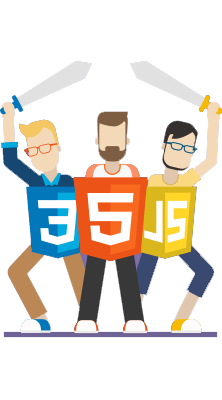
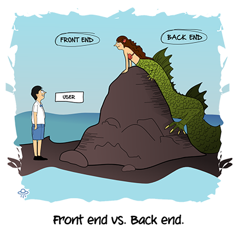

Web前端开发是从网页制作演变而来的，名称上有很明显的时代特征。在互联网的演化进程中，网页制作是Web1.0时代的产物，那时网站的主要内容都是静态的，用户使用网站的行为也以浏览为主。

2005年以后，互联网进入Web2.0时代，各种类似桌面软件的Web应用大量涌现，网站的前端由此发生了翻天覆地的变化。网页不再只是承载单一的文字和图片，各种富媒体让网页的内容更加生动，网页上软件化的交互形式为用户提供了更好的使用体验，这些都是基于前端技术实现的。

以前会Photoshop和Dreamweaver就可以制作网页，现在只掌握这些已经远远不够了。无论是开发难度上，还是开发方式上，现在的网页制作都更接近传统的网站后台开发，所以现在不再叫网页制作，而是叫Web前端开发。

Web前端开发在产品开发环节中的作用变得越来越重要，而且需要专业的前端工程师才能做好，这方面的专业人才近几年来备受青睐。Web前端开发是一项很特殊的工作，涵盖的知识面非常广，既有具体的技术，又有抽象的理念。简单地说，它的主要职能就是把网站的界面更好地呈现给用户。